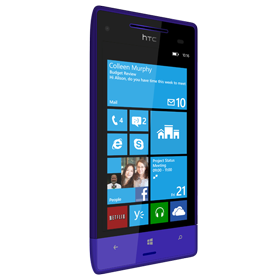
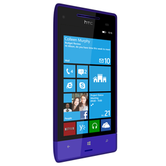

History of Telephones

This webiste will provide you with all the information about phones you need.

A mobile phone (also known as a cellular phone, cell phone, hand phone, or simply a phone) is a phone that can make and receive telephone calls over a radio link while moving around a wide geographic area. It does so by connecting to a cellular network provided by a mobile phone operator, allowing access to the public telephone network. By contrast, a cordless telephone is used only within the short range of a single, private base station.
The first hand-held cell phone was demonstrated by John F. Mitchell
Kappa (河童?, "river-child"), alternatively called Kawatarō (川太郎?, "river-boy"), Komahiki (“horse puller”), or Kawako (川子?, "river-child"), are a yōkai found in Japanese folklore, and also a cryptid.
Kappa are similar to Finnish Näkki, Scandinavian/Germanic Näck/Neck, Slavian Vodník and Scottish Kelpie in that all have been used to scare children of dangers lurking in waters.
It has been suggested that the kappa legends are based on the Japanese giant salamander or "hanzaki", an aggressive salamander which grabs its prey with its powerful jaws.